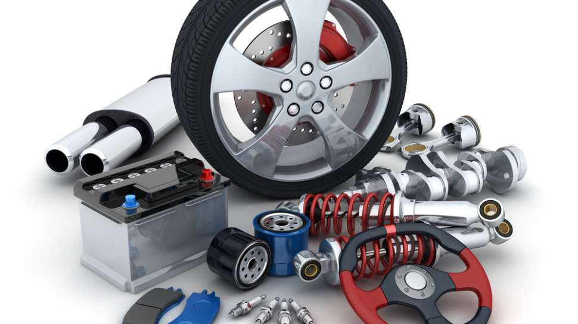
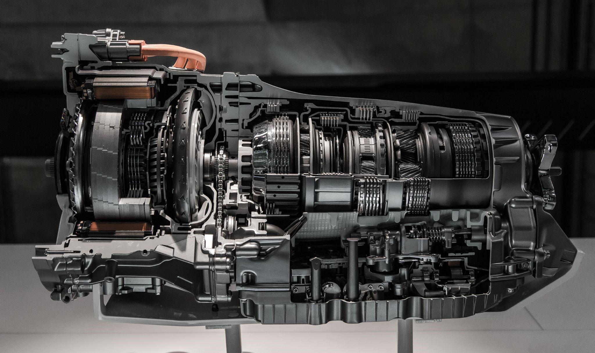

| Profil | Home | Portofolio | Contact |
|
|
|||
| sistem pelumasan mesin kendaraan adalah sistem yang membantu mendinginkan dan mengolesi logam mesin mobil dengan cairan berupa oli untuk mengurangi gesekan antara bagian mesin yang bergerak, sehingga dapat mengurangi keausan dan panas yang terjadi pada mesin. |  | suspensi kendaraan adalah bagian yang penting pada sebuah mobil yang berfungsi untuk menopang seluruh beban kendaraan serta membantu mengontrol pergerakan mobil saat di jalan. | |
| pada sistem transmisi digunakan untuk menyalurkan tenaga mesin ke roda penggerak, sistem ini juga untuk mengubah kecepatan dan tenaga putar. ada beberapa dalam pengoperasian mobil, yaitu untuk meneruskan tenaga yang dihasilkan mesin dari kopling ke poros propeller, menciptakan momen yang dihasilkan mesin sesuai dengan kebutuhan. |  | ||